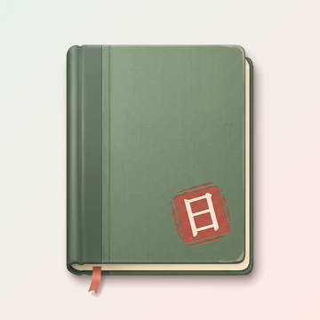
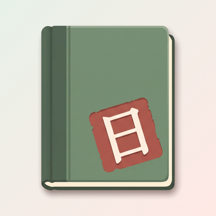
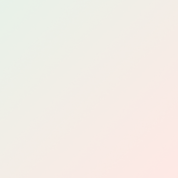
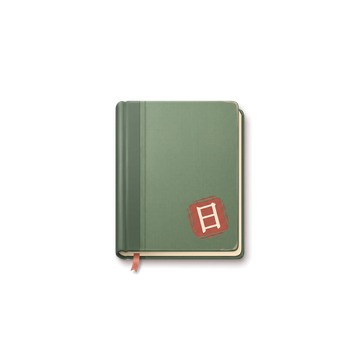
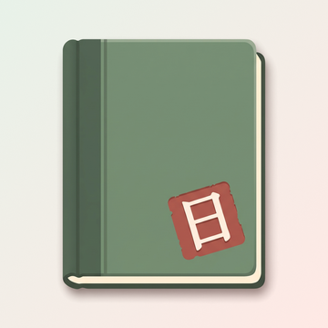

사용자가 만든 래스터 아이콘(표지 결, 책등, 책갈피 리본, 그림자)을 앱 아이콘 원본으로 바꿉니다. 60px 이상은 큰 원형(질감판), 48px 이하는 작은 원형(평면판, 책을 키움) 규칙은 그대로입니다.
홈 화면 크기별 (Q1 ② 기준)
iOS 모서리(22%)로 깎았습니다. 60px 이상은 큰 원형, 40px 이하는 작은 원형입니다. 마지막 둘은 Android 원형 마스크(108dp 중 가운데 72dp)이고, 전경은 책 몸통이 중심에서 30.9dp, 그림자 끝이 32.7dp라 안전 원(반지름 33dp) 안입니다.

18060

402920


Android 64Android 48
Q1. 작은 원형(48px 이하)의 낙관 크기
생성 그림은 낙관이 캔버스의 23%라, 29px 이하에서는 빨간 사각만 보이고 日이 뭉개집니다. 옛 작은 원형은 낙관을 34%로 키웠습니다(V7). 큰 원형(60px 이상)은 두 안 모두 그대로입니다.
① 생성 그림 그대로
큰 원형과 낙관 비율이 같습니다. 작은 크기에서 日이 읽히지 않습니다.

12048402920
② 낙관 1.45배권장
옛 작은 원형과 같은 34%. 40~48px에서 日이 읽히고, 20~29px에서도 빨간 낙관이 또렷합니다.
12048402920
Q2. 공유 이미지 아래 로고(가로 조합 lockup)
지금 가로 조합은 옛 도형 아이콘을 품은 SVG이고, 앱의 오늘 문장 공유 이미지 아래에 들어갑니다. 공유 이미지 1080px를 1/3로 줄여 보였습니다.
① 지금 그대로 (옛 도형 아이콘 SVG)
벡터라 어느 크기에서나 선명합니다. 홈 화면 아이콘과 모양이 달라집니다.
11월 9일 일요일
용신의 날
오늘은 미뤄 둔 정리를 끝내기 좋은 날이에요.
② 새 아이콘으로 맞춤권장
홈 화면 아이콘과 같은 그림입니다. 가로 조합을 래스터(PNG)로 새로 만들고, app에 공유 이미지 로고를 PNG로 바꿔 달라고 요청합니다.
11월 9일 일요일
용신의 날
오늘은 미뤄 둔 정리를 끝내기 좋은 날이에요.
③ 워드마크만
아이콘 없이 글자만 둡니다. 벡터 그대로라 app 변경이 가장 작지만, 공유 이미지에서 앱 아이콘을 알아볼 단서가 사라집니다.